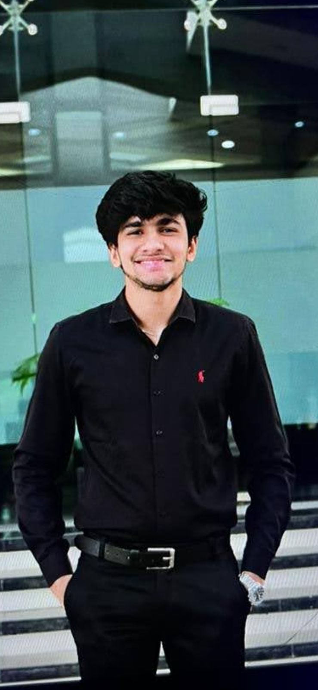

In compliance with the Hon'ble Supreme Court directives dated 4th January 1996, the State Blood Transfusion Council (SBTC) Uttar Pradesh was constituted under the Chairpersonship of the Principal Secretary, Medical Health & Family Welfare, Government of Uttar Pradesh.
The SBTC serves as a representative body with members from various governmental and non-governmental organizations, aiming to provide adequate and safe blood and its components at reasonable rates in the state.
To ensure a safe and adequate blood supply by promoting voluntary blood donation, implementing quality standards, and creating a robust network of blood transfusion services across the state.
To become a leading blood transfusion service provider that ensures zero shortage of safe blood, promotes voluntary donation, and saves lives through efficient blood management.
The SBTC is responsible for:

Director, SBTC
Medical Officer
Program Coordinator
Join us in our mission to save lives and make blood transfusion services self-sufficient and effective. Whether you're a potential donor, volunteer, or healthcare professional, your contribution can make a significant difference.
Together, we can ensure that safe blood is available whenever and wherever it's needed, saving countless lives across Uttar Pradesh.